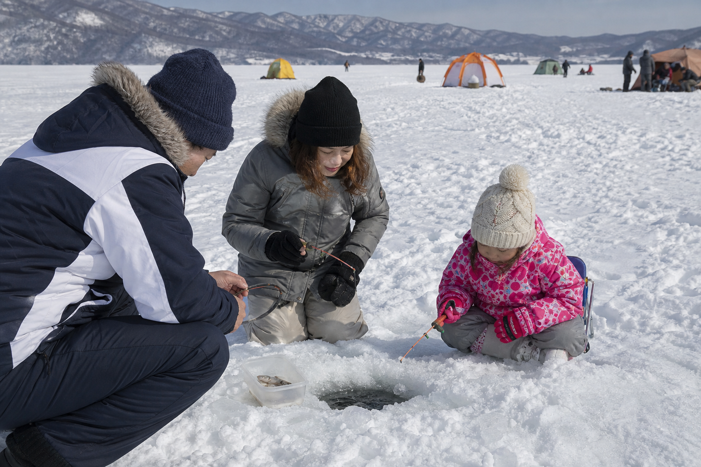
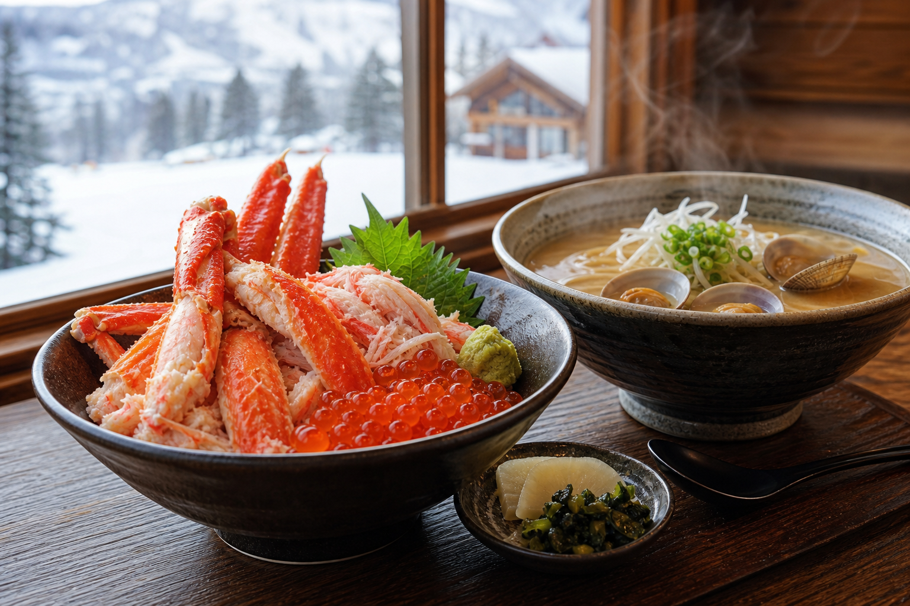
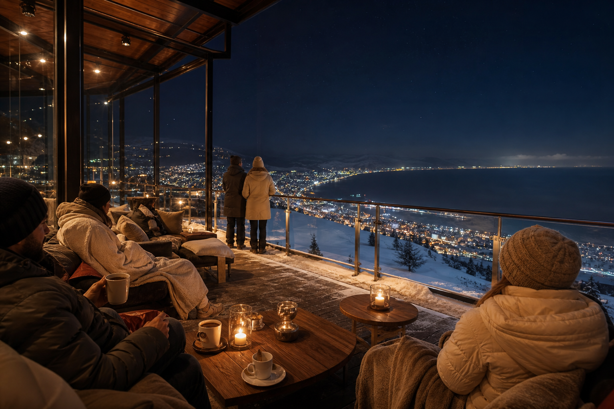

流氷 × 網走湖 × オホーツク海パノラマ
天都山から6コース900m——冬は流氷が近い網走湖とオホーツク海を一望。ペアリフト900m、ナイター21:00まで。巨大リゾートとは異なる、オホーツク文化と全景を味わうローカルゲレンデ。
コース・パノラマを見る北海道網走市 · 天都山 · オホーツク
流氷と網走湖、オホーツク海——天都山6コース900mから望む、北の全景スキー。
地元 ¥2,940/日 天都山パノラマ ナイター〜21:00 6コース更新 6/13 9:00
リフト
運行中
ペアリフト900m · 天都山
コース
6コース
初級〜中級 · ボードデビュー向け
雪質
オホーツク粉雪
流氷期パノラマ · 要確認
ナイター
〜21:00
Night Snow Lounge連動

Okhotsk Panorama
網走湖とオホーツク海、冬は流氷が近い——天都山のゲレンデから360°の北の全景。ペアリフト900m・6コース、ナイターは21:00まで。網走駅・女満別空港からバス・レンタカーでアクセスし、流氷観光・博物館ビッグ3・鶴雅リゾートと束ねたオホーツク滞在の拠点。
レークビューの魅力
天都山から6コース900m——冬は流氷が近い網走湖とオホーツク海を一望。ペアリフト900m、ナイター21:00まで。巨大リゾートとは異なる、オホーツク文化と全景を味わうローカルゲレンデ。
コース・パノラマを見る緩斜面と非混雑の6コース——スノーボード初挑戦に最適。レンタル¥1,000/時間、手ぶらパッケージもWinter Iron Passに統合。家族・カップルの「はじめての北の雪」拠点（LP案）。
ボードレンタルを見るLocal Pricing Protected
網走市民・近隣向け1日券¥2,940、2時間券¥1,200を維持——地元の日常利用を守ることが最優先。遠方・インバウンド向けの収益はWinter Iron Activity PassやNight Snow Loungeなど来場者パッケージで延伸する二重料金モデル（LP戦略案）。
Local Day
地元1日 ¥2,940
Local 2h
地元2時間 ¥1,200
来場者向けはパッケージ商品で設計
Flagship Product
朝の網走湖ワカサギ釣り（氷上）＋2時間スキー＋手ぶらレンタル——オホーツク冬の鉄板3点を1枚に。流氷期の定番体験とゲレンデを安全に束ね、初級〜中級・ボードデビュー層の滞在日数を延伸する看板商品（LP戦略案）。
Pass
Winter Iron Activity Pass ¥8,000〜10,000
地元料金は触らず、来場者の「オホーツク1日」を商品化——ワカサギ×スキーの鉄板パスが差別化の核。
Restaurant Reform
ゲレンデレストラン改革——オホーツク海鮮丼¥1,500〜2,500を軸に、従来の短いランチ時間帯を延伸。ナイター連動のフードトラックカフェ、年間営業のOkhotsk Panorama Cafe（花天都資産）で、滑走以外の滞在理由を増やす（LP案）。
毛ガニ・ホタテ・鮭イクラ——オホーツクの海を丼に。¥1,500〜2,500でランチの核、 après-ski の定番メニュー。
11–14時中心から、ナイター前後・週末午後まで営業を拡張——Night Snow Lounge来場者と地元利用者の両方に対応。
21:00ナイター連動——雪山の麓でホットドリンクと軽食。滑らない同伴者も歓迎の après ゾーン。
花天都（hana-tento）花園資産を活用した年間カフェ——非シーズンも天都山パノラマを売る。流氷 off-season の網走滞在拠点。


Night Snow Lounge
Night Snow Lounge——鶴雅リゾート送迎シャトル付き¥3,000。非スキーパートナーも歓迎、リフトで頂上へ上がり雪山の上でドリンク。21:00までのナイターと連動した、滑らない人も楽しめる夜の体験商品（LP戦略案）。
Lounge
Night Snow Lounge ¥3,000
カップル・家族の「片方だけ滑る」を解消——頂上ラウンジが夜の差別化と宿泊連携の接点。
Snowboard Debut
6コースの緩斜面と非混雑——網走レークビューを「はじめてのスノーボード」目的地に。ボードレンタル¥1,000/時間、Winter Iron Passには手ぶらセットを同梱。家族・カップル・インバウンド初級者の獲得軸（LP案）。
Rental
ボードレンタル ¥1,000/時間
Okhotsk Ecosystem
ゲレンデ単体では生まれない滞在——網走市の文化・自然資産とWinter Iron Passを束ね、1泊2日のオホーツク周遊モデルを設計（LP戦略案）。
国指定重要文化財——明治期の実刑施設を体感。冬の網走定番、インバウンドにも人気の歴史コンテンツ。
流氷の科学と体験——天都山ゲレンデから見た流氷の「背景」を学ぶ、ビッグ3の核。
アイヌ・オホーツク文化——北の peoples の生活と芸術。3館セットで網走の深さを延伸。
冬の定番氷上釣り——Winter Iron Passの午前枠。湖の上で釣ったワカサギは近隣店で天ぷらも。
網走湖畔の温泉リゾート——Night Snow Lounge送迎、宿泊＋パス＋博物館のハブ。
Okhotsk Winter Day
網走湖ワカサギの朝、Winter Iron Passで2時間滑走、博物館ビッグ3の午後、鶴雅からNight Snow Lounge——地元料金を守りつつ来場者の1日を¥8,000〜15,000で設計するオホーツクモデル（LP案）。
DRIFT ICE · LAKE ABASHIRI · OKHOTSK PANORAMA来場者1日モデル ¥8,000〜15,000/人（LP案）
01
AM 網走湖ワカサギ
氷上釣り体験——Winter Iron Pass午前枠
02
午後 2時間滑走
6コース900m · 手ぶらレンタル · 地元以外はパス
03
オホーツク海鮮丼
¥1,500〜2,500 · 営業時間延伸ランチ
04
博物館ビッグ3
監獄 · 流氷館 · 北方民族——文化午後
05
鶴雅リゾート
湖畔温泉 · Night Snow Lounge送迎待ち
06
Night Snow Lounge
頂上ドリンク · ナイター21:00 · ¥3,000
特集
6コース・ペアリフト900m・ナイター21:00——天都山から望む流氷、網走湖、オホーツク海の360°ビュー。巨大リゾートとは異なるローカルゲレンデの位置づけ、駐車428台無料、日専連オホーツク網走運営。
読む朝ワカサギ氷上釣り＋2時間スキー＋手ぶらレンタル¥8,000〜10,000——地元料金¥2,940/¥1,200は据え置き、来場者向け鉄板パッケージ。流氷期の半日〜1日モデル、ボードデビュー層にも対応（LP戦略案）。
読む博物館網走監獄、オホーツク流氷館、北方民族博物館、網走湖ワカサギ、鶴雅リゾート、Night Snow Lounge¥3,000、Okhotsk Panorama Cafe年間営業——Winter Iron Passを軸に1泊2日のオホーツク滞在を設計。
読むAccess
網走駅からバス・タクシー · 女満別空港から約40km · 駐車428台無料
TEL 0152-48-2550（スキー場 · シーズン中）
TEL 0152-45-5655（オフシーズン · 管理事務所）